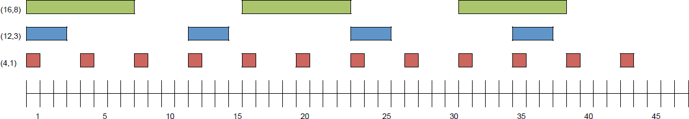
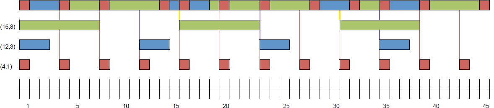
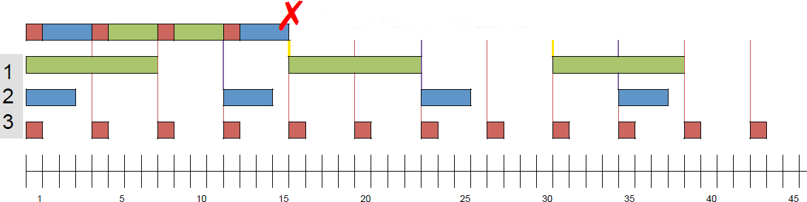
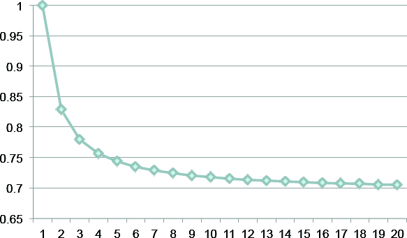

Research School of Engineering
ENGN8537: Embedded Systems and Real Time Digital Signal Processing
Are you classified as
Executive
Scheduling
Negative, I am a meat popsicle.
References:
Burns and Wellings Real-Time Systems and Programming Languages (Third Edition), Addison Wesley Longmain 2001
Thanks to Dr Uwe Zimmer for inspiration and material from COMP4330
Scheduling
We have asserted that schedulers or executives exist that can determine the best order in which to run a set of threads.
This scheduling problem will be examined for the CPU, however all shared resources must be scheduled
We have asserted that the existence of a preemptive executive can improve the determinism of the system by considering all possible options for allocation of CPU time in order to choose the best order in which to run threads.
In addition to ordering access to the CPU, the executive can order access to other shared resources (such as the network) to the same end. It can also provide a central location at which to calculate the worst case behaviour of the system.
This prediction can be used at compile time to verify that the overall temporal requirements of the application can be met, or at run time to permit or reject tasks as they apply for resources.
Example Case
- All threads are periodic with known period
- Threads are independent
- Overhead of the executive is negligable
- All threads have deadline equal to their period
The last condition simply states that all "old" instances of a thread must have completed executing before a "new" one is started
Requested Times
Utilization
\[ \frac{1}{4} + \frac{3}{12} + \frac{8}{16} = 100\% \]This can theoretically be successfully scheduled as CPU utilization is exactly 100% (not more).
Earliest-Deadline First
Execute current thread until:- It finishes
- Another thread is found with an earlier deadline
In the case of two threads being found with the same deadline, context switches are avoided; i.e. which ever already has the CPU keeps it. If neither already has the CPU, the behaviour is implementation-dependent.

Safely scheduled.
EDF can safely schedule to 100% utilization (so long as all threads conform to their prescribed period)
Fixed-Priority Rate Monotonic
- Assign threads fixed priority based on their period, short periods are high priority.
- At any time, run the thread with the highest priority
Rate-Monotonic Priority scheduling is optimal amongst fixed-priority schedulers, in that if a set of threads can be safely scheduled with any fixed priority scheme, they can be safely scheduled with RMP.

Green missed deadline.
Safe Utilization
RMP can not safely schedule to 100% utilization.
A sufficient condition for safety is \[ U \leq N \left( 2^\frac{1}{N} - 1 \right) \]

Comparison
EDF
- Complex to implement
- Safe to 100% utilization
- Any (all) thread(s) may miss deadline when oversubsribed
RMP
- Simple to implement
- Cannot schedule to 100%
- Low-priority threads always miss deadline first
The fact that static priortiy schemes have well-defined failure modes (lowest priority misses first) is often highly desirable.
EDF not only doesn't have this property, but a single overrun can lead to a cascade of missed deadlines from which is may never recover (without intervention).
We have only considered scheduling where all threads are hard real time. Scheduling with soft real time or non-real time threads won’t be considered theoretically in this course.
We will, however, see one practical implementation when we examine the Linux Kernel’s scheduler